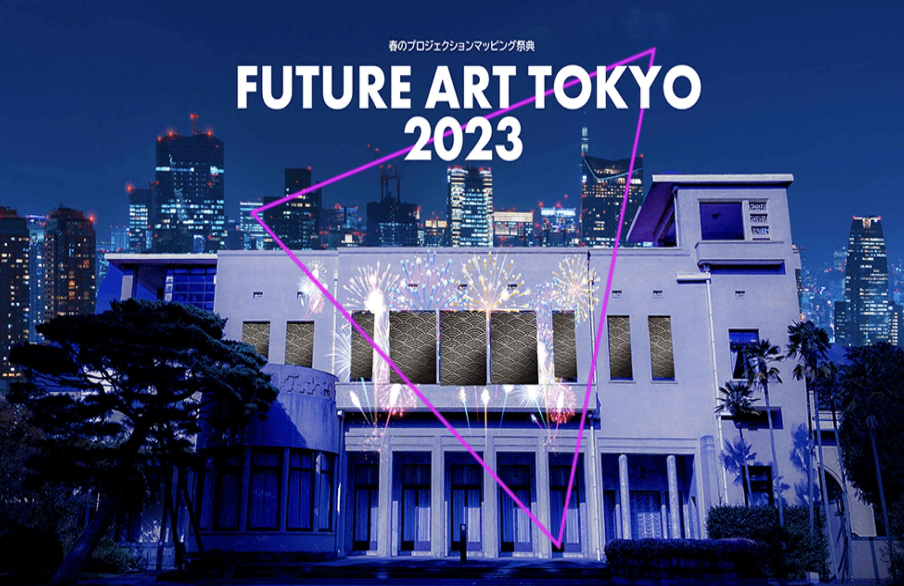

[ 東京都庭園美術館開館40周年記念事業 ] Projection Mapping



Medium Projection Mapping /flyer
year April2023
software blender / madmapper / Premiere Pro
イベント記録：
FUTURE ART TOKYO 2023（東京都庭園美術館）
京都庭園美術館の開館40周年記念プロジェクトにて、本館の3DCG再現とアニメーションを担当しました。
美術館や国立国会図書館から資料を集め、本館の特徴であるアール・デコ建築をモチーフに映像作品を仕上げました。
また、子どもたちのロボット操縦ワークショップなどを通じて、地域に開かれたイベントを目指しました。
このプロジェクトを通じて、異なる立場のメンバーと目的を共有しながら連携し形にすることを学びました。